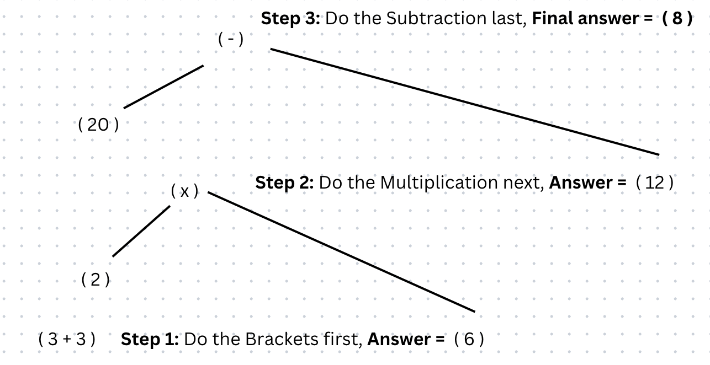
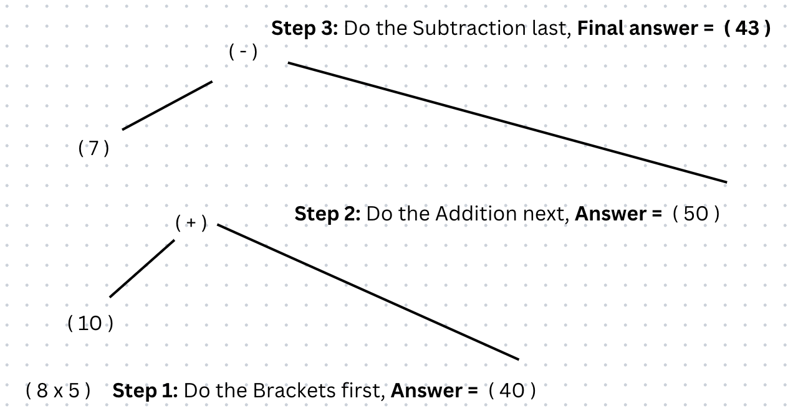
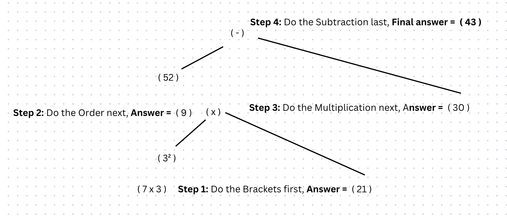

Brackets (also known as parentheses) is the 1st operator in the BODMAS rule.
Anything you see in the brackets, you start with first.
Remember the order in which you work through a calculation is according to ORDER OF IMPORTANCE.
Below are some examples of BODMAS questions using order to give you an idea:
Below are some examples of BODMAS questions using brackets and where you might go wrong:
Answer = 8
Potential mistake: You may end up calculating 20 - 2 as you may know to work from left to right for equations but, in BODMAS you work based on the order of importance. Therefore you must do what is in the brackets first, then you multify and finally subtract.
Here is a further step by step breakdown for you to understand:
Answer = 43
Potential mistake: You may end up calculating 40 - 7 after doing what is in the brackets but, in BODMAS you work based on the order of importance, therefore you must do what is in the brackets first, then you add and finally subtract.
Here is a further step by step breakdown for you to understand:
Answer = 22
Potential mistake: You may end up calculating 52 - 32 as you may know to work from left to right for equations but, in BODMAS you work based on the order of importance, therefore you must do what is in the brackets first, then you do the order and finally subtract.
Here is a further step by step breakdown for you to understand:
Have a go at the example below:
Let AJAX change this text